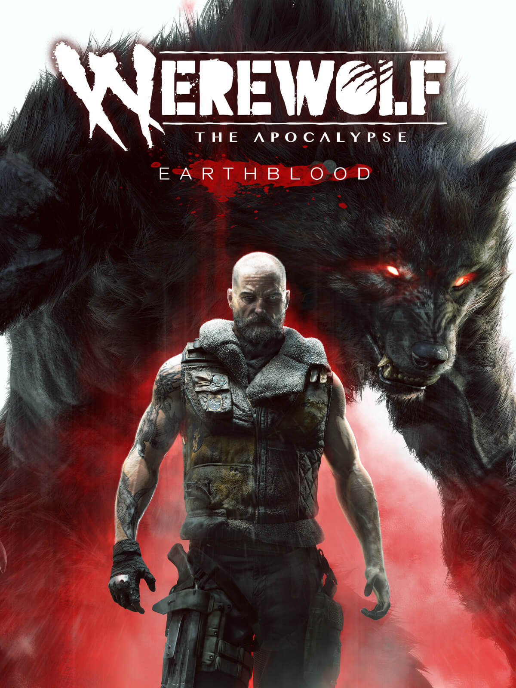
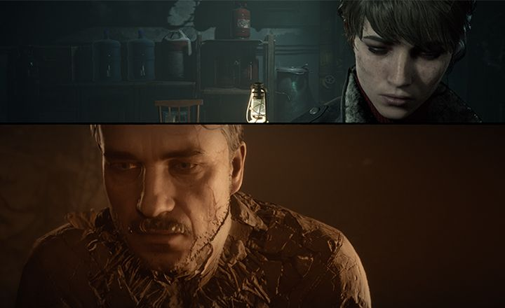
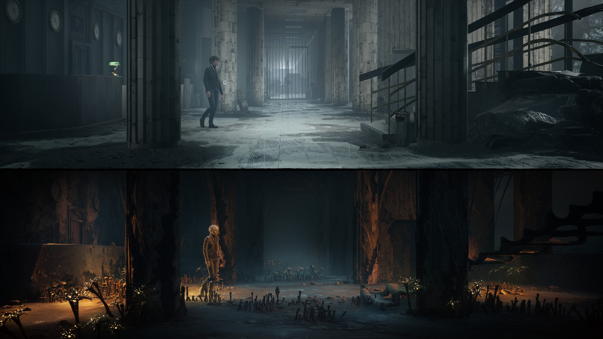
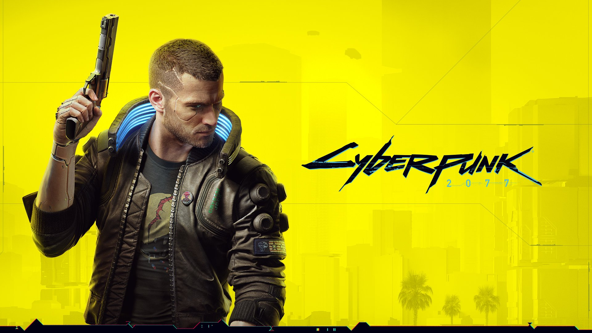
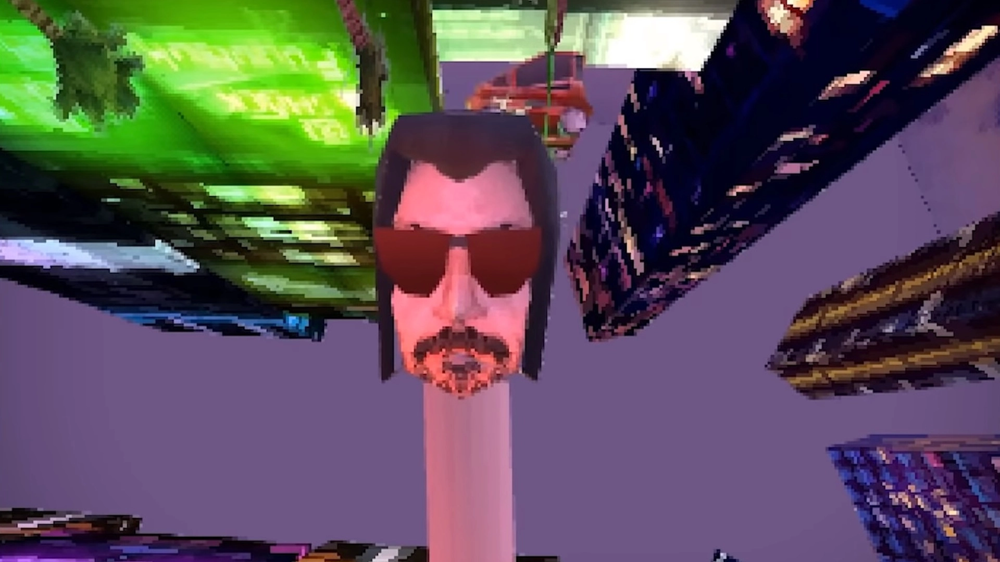

Werewolf: The Apocalypse – Earthblood
Tvorcovia Lovecraftového herného dobrodružstvo Call of Cthulhu z roku 2018, ktoré ma osobne veľmi prekvapilo, tento rok pribehli so svojim ďalším herným počinom, tentoraz s hack and slash RPG, ktoré patria do univerza World of Darkness, ktorého súčasťou i Vampire: The Masquerade. Najnovšie titul ponúka zaujímavé prvky i príbehové zasadenie, ale podarilo sa titulu oprostiť od klišovitých zabehnutých konceptov a fráz alebo ide o ďalšie priemernú hru?
Vývojár: Cyanide Studio
Dátum vydania: 4. februára (februára) 2021
Herná doba: 12 hodín
Naš verdikt
Aj napriek všetkym negatívnim článkom hry, ktoré bezpochyby obsahuje, sa jedná o slušnú rezbu, ktoru je zábavné hrať. Zamrzí však zaostalé grafické spracovanie, nezaujímavé postavy a ich charaktery alebo nepoutavý až nevýrazný hudobné podkres. Naopak si dali tvorcovia záležať na solídnom súbojovom systému a na Premieňania medzi troma podobami. Keď mu zrovna nemáš čo hrať, si verný fanúšik a nenáročný hráč, Werewolf: The Apocalypse - Earthblood sa ti dozaista bude páčiť. Nepočítaj ale s dychberúcimi zážitkom a oslnivým vyvrcholením.
The Medium
Verdikt
Hru som si užil, musím vypichnúť jednu vec. Ak dáš The Medium šancu, rozhodne tak urob s kvalitnými slúchadlami. Ozvučenie je jednoducho geniálne a obsadenie Akiru Yamaoku (veterána série Silent Hill) sa ukázalo ako fantastická voľba. Soundtrack sedí prostrediu ako “riť na šerbeľ” a dotvára atmosféru v štýle, v akom to nedokáže žiadne grafické spracovanie. Pán Yamaoka, zas a znova – klobúk dole!
Ako som už spomínal na začiatku, prevládajú vo mne zmiešané pocity. Koncept dvoch realít prináša dostatok sviežosti do príbehu aj gameplayu, pričom zasadenie do Poľska a angažovanie svetoznámeho skladateľa sa ukázalo ako perfektný ťah. Preto ma mrzí, že tak veľký potenciál je brzdený zastaralým ovládaním, nudnou hlavnou postavou a pokazeným technickým spracovaním. Ak však vlastníš Game Pass, daj The Medium jednoznačne šancu – prinajhoršom stratíš pár hodín svojho života. A ak si dočítal túto vyše 1600-slovnú recenziu až do konca, je jasné, že s tým problém nemáš…
Cyberpunk 2077
Rok 2020 so sebou priniesol jednu katastrofu za druhou a dokázal položiť aj tých najväčších velikánov. V hernom svete sme zase mohli vidieť enormné problémy ako zo strany hráčov, tak aj samotných vývojárov, pre ktorých pandemická situácia zaiste nebola jednoduchá. Do jednej takejto zamotanej situácie sa dostalo aj poľské štúdio CD Projekt Red, ktoré nám prinieslo svetovo uznávaného Zaklínača. Podarilo sa im s ich najnovším titulom, Cyberpunk 2077, udržať kvalitu alebo sa prepadli v očiach fanúšikov?
Technické spracovanie a bugy, bugy a ďalšie bugy
CD Projekt Red nastavilo v roku 2015 latku poriadne vysoko a to najmä sami pre seba. Po skvelom Zaklínačovi bol hype okolo Cyberpunku ohromný a aj keď to určite pomohlo marketingu, tím vývojárov trpel. Odzrkadľuje sa to nie len na zlom technickom spracovaní, ale aj na chýbajúcich, nedokončených alebo odstránených funkciách hry ako napríklad wall-running, customizácie vozidiel a iné. Všetci zrejme taktiež videli ako hra beží na starších konzolách, no my recenzujeme hru na PC a preto sa budeme držať iba tejto platformy.
Kostrbaté technické spracovanie však nie je vidno iba na tom, ako hra samotná beží. Vidieť to môžeme na každom kroku v Night City. Obrovské množstvo rôznych bugov a glitchov konštantne narúša atmosféru a doslova vytrháva hráča z imerzie. Nebudem preháňať ak poviem, že Cyberpunk 2077 je zrejme najviac zabugovanou hrou akú som kedy hral v deň vydania. Väčšinou však išlo iba o estetické alebo vizuálne bugy a nenarúšali samotný prechod hrou. Dávam však dôraz na slovíčko „väčšinou“, pretože zopárkrát som musel načítať posledný save, aby som resetol bugnutú misiu.
Verdikt
CD Projektu sa podarilo vytvoriť nádherne vyzerajúcu hru s výborným príbehom a zábavným gameplayom, ktorá však neprináša nič nové alebo prevratné. Otvorený svet je mŕtvy, počet aktivít je obmedzený a imerziu narúšajú konštantné bugy. Napriek veľkému množstvu nedostatkov som si však hru užil a teším sa, ako si ju opäť za rok zahrám. Dúfam, že do tej doby budú schopní väčšinu týchto problémov odstrániť. Je zrejmé, že Cyberpunk 2077 potreboval ešte minimálne pol roka vývoja a úprimne dúfam, že sa z toho poučili nie len poľskí developeri, ale aj všetky ostatné štúdiá na celom svete.